House Prices Prediction
Introduction to the problem and dataset
Compared to a few years ago, the housing market has grown extremely unstable as finding affordable housing
gets more difficult. The percentage of young adults living with parents currently is close to that of those
with the Great Depression. In this project, we hope to use data mining models to answer questions like: What
features in a house impact the price the most? These may help new home buyers negotiate pricing if a house
is missing a feature.
The dataset used for this project was downloaded from Kaggle.com. Though it was originally compiled by Dean
De Cock for use in data science education. The data on houses in Ames, Iowa. The dataset has 81 columns of
data, from house price and lot area to roof material.
What is regression and how does it work?
Regression is a mathematical and data science model that can be used to understand the relationship between dependent and independent variables. Once the model is created, it can also be used to predict continuous values for given inputs. The first model we will use is the linear regression model, which tries to fit a line of best fit to the data. Like we learned early on in algebra, a line can be represented by y = mx + b, with b being a constant and x representing some input value, in this case the value of a feature, with m being its slope or impact on the final value. For the model, this can be slightly modified by adding more variables, making the equation y = b + m1x1 + m2x2 + m3x3... and so on. First, we guess a line through the data, then we calculate the distance between the actual values and the guessed line and sum the squares of the distances. We then change the m's a little and recalculate the sum. As we get closer to the actual line of best fit, the sum of squares will keep decreasing. This method is called the least-squares method and will get to a line that comes closest to predicting the actual value given the inputs. In the final line, as the m coefficient of a value gets closer to 0, it means its impact on the final y is lower.
Data understanding
Before anything, we need to convert and load the CSV data file into a Pandas dataframe.
 Looking at the shape of the data frame, we notice that it contains a really large amount of data, so we will
likely need to find ways to reduce the size to increase modeling speed. But for now onward, just understand
what we are working with. The Kaggle page already provides a good description of all the features. So I
moved on to checking for nulls.
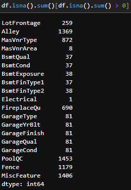
As we see, many features have nulls. We see that there are groupings with similar numbers of null values.
For instance, four garage-related features all have 81 null values. Hence, there may be multicollinearity
between these features.
Looking at the shape of the data frame, we notice that it contains a really large amount of data, so we will
likely need to find ways to reduce the size to increase modeling speed. But for now onward, just understand
what we are working with. The Kaggle page already provides a good description of all the features. So I
moved on to checking for nulls.
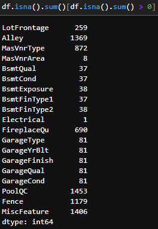
As we see, many features have nulls. We see that there are groupings with similar numbers of null values.
For instance, four garage-related features all have 81 null values. Hence, there may be multicollinearity
between these features.
Pre-processing
For the features that barely have nulls, we will take care of that by just dropping rows containing them.
Since this is a really small percent of the entire dataset, it should impact our models.
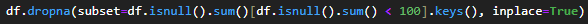
We can also remove the columns with a large null count because a large portion of our dataset doesn't have
those values anyway, and just looking at them, it seems to be for extra things, not the main house itself.
 Next, we must also drop all non-numerical columns as our regression model doesn't support them, and we
already have too many columns, so creating dummy columns for each would increase the model training time
significantly.
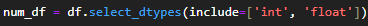
Next, we also drop the ID column since its an arbitrary value for the dataset and not actually housing.
Next, we must also drop all non-numerical columns as our regression model doesn't support them, and we
already have too many columns, so creating dummy columns for each would increase the model training time
significantly.
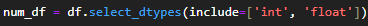
Next, we also drop the ID column since its an arbitrary value for the dataset and not actually housing.
 Now we move on to separating data into two: independent variables (our features) and output or dependent
variable (the house price).
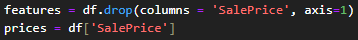
Now we move on to separating data into two: independent variables (our features) and output or dependent
variable (the house price).
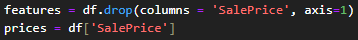
Modeling
For the first experiment, I am going to use linear regression in an attempt to model the dataset. We will
use the model trainer from the Sklearn library to create this. Before we begin, we must further split the
features and price dataframes to create training and testing sets. Finally, we import, create, and train our
linear model on the training subset. We run the model many times, keeping track of an average and the best
scoring model to ensure accuracy.

Evaluation
After training, we get a variety of scores, with the highest I have seen being around 0.876. 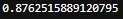 Looking at the coefficients of the model with the above score, we get. 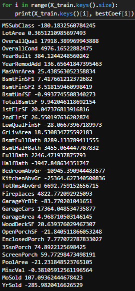 It seems that the remaining features we can see have the most positive and negative values in terms of price. A surprising thing I see is that LotArea doesn't seem to have much impact on the value, which is against what I believe to be true. Some things came as expected, like overall quality, which has the most positive impact on the price. Another surprising positive is that a basement full bathroom seems to have more than twice as much impact on the price as a non basement full bathroom.
Experiment 2
Since we removed many features, I am going to now try and see if we can keep them. Since using dummies causes more than 250 columns, I decided against this. 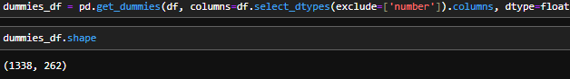 Instead, I used LabelEncoder from the Skelearn library to encode each categorical value into a number. This leaves us with the strings being usable while also not changing the number of columns. 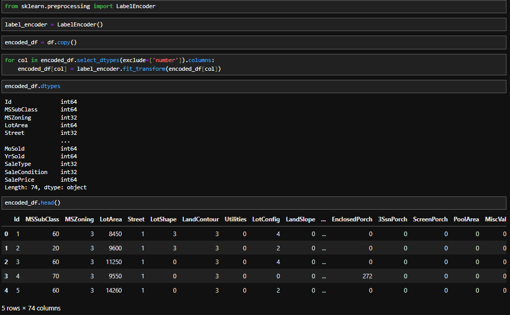 The average score for this new dataframe was better by 0.02, but the best model was still 0.876. In terms of coefficient, it seems street (paved or gravel) has the most impact of all, dwarfing the second most positive impact by more than three times. The most negative impact can be caused by the fact that the property has utilities, which is logical.
Experiment 3
In our data understanding, we saw that there may have been a correlation between some features. Let's see if another correlation exists using a correlation heatmap. There are some obvious correlations, like those between Garage Year Built and Year the Whole House, because most houses built in this era are built with garages. The lowest row also shows values that have the most impact on the house price. Like predicted Overall quality is more important than one individual value. Lastly, a surprising correlation I noticed is that there is a 51% correlation between the full bathroom and the number of cars in the garage. While there isn't a connection between square feet on the first or second floor and the number of cars in the garage. 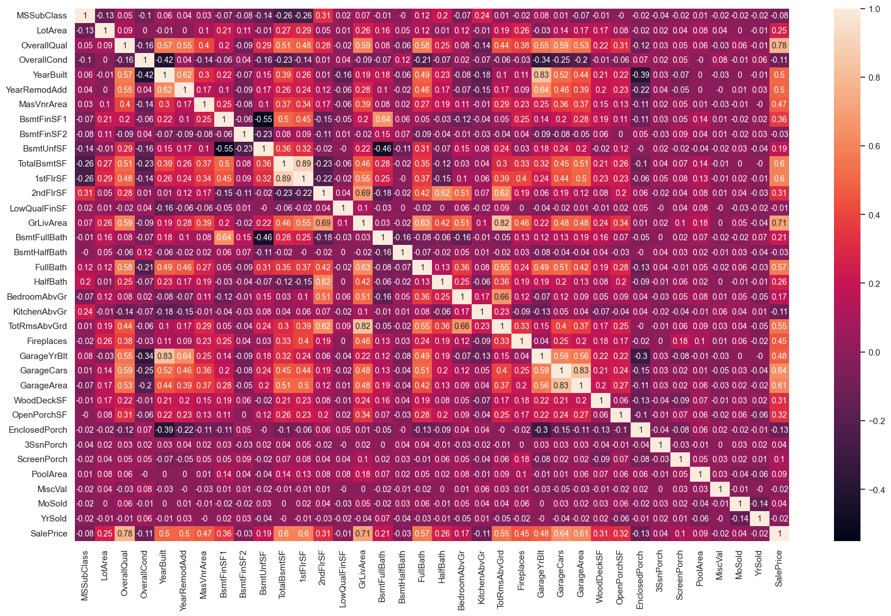
Impact
The true impacts of this project are unknown. An obvious positive is that new buyers can use this understanding of how each feature impacts a house price to negotiate and understand whether a price is fair. But with this project also comes a negative impact. A realtor and company can use this information to figure out features that have the most negative impact on price, thus focusing on trying make them difficult to find or just lie about a property.
Conclusion
In conclusion, in terms of impact, the price of a house is influenced by its overall quality the most, rather than one feature. Additionally, because of the significant accuracy of an even basic linear model, it suggests that There is an objective method for calculating the expected housing price. Rather than what we seem to see now, a days where even the most simple houses have a high asking price without supporting features. So the next time you are in search of a house maybe compile a dataset of houses sold and on sale in the area and create a model to determine what features the market in the area is asking the most for.
References
My Dataset:
https://www.kaggle.com/competitions/house-prices-advanced-regression-techniques/data
Code File:
Project 3 Code.ipynb